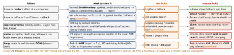

react-native · folio
In one line: Every failure has one catcher: a render error goes to the nearest
error boundary; an uncaught JS exception to ErrorUtils’ global handler
(fatal in release = crash); an unhandled rejection to nobody unless you install a tracker; a
native crash, an ANR or OOM kills the process and is reported next
launch. Design which errors the user sees, which retry, and which crash on purpose.
Download PDF Print view LaTeX source


Error boundaries — what they catch
- A class component with
static getDerivedStateFromError(e)(render the fallback) andcomponentDidCatch(e, info)(info.componentStack— minified in prod). No hook equivalent — usereact-error-boundary. - Catches errors thrown while React renders, runs lifecycles/effects of its children — and inside a
startTransitionfunction. Not: event handlers,setTimeout/async code, errors in the boundary itself. - Route async errors in:
const { showBoundary } = useErrorBoundary(), thencatch(e) { showBoundary(e) }. Reset withresetKeysor a newkey. - Placement: one at the root (last resort), one per screen/route, one around risky widgets (a chart, a 3rd-party view) — the rest of the screen keeps working.
Example — global handler + rejection tracker (entry file)
const prev = ErrorUtils.getGlobalHandler();
ErrorUtils.setGlobalHandler((error, isFatal) => {
report(error, { isFatal }); // persist first, send later
if (__DEV__ || !isFatal) return prev(error, isFatal); // LogBox
showFatalScreen(error); // or prev(): the deliberate native crash
});
const H = (globalThis as any).HermesInternal;
if (H?.hasPromise?.()) H.enablePromiseRejectionTracker?.({
allRejections: true, // one tracker: chain others
onUnhandled: (id: number, e: unknown) => report(e, { rejection: true }),
onHandled: () => {},
});- Chain, don’t replace: crash SDKs (Sentry hooks
ErrorUtils) and LogBox each rely on the handler — keepprevand call it, or one of them goes blind. - A network send from a fatal handler may never leave before the process dies — persist, send next launch(unverified).
- Swallowing a fatal keeps a corrupted app alive; prefer a restart screen (
Updates.reloadAsync()in Expo).
Dev vs release
LogBox (default since 0.63; replaced RedBox/YellowBox): uncaught errors open full screen, logs show as notifications; LogBox.ignoreLogs([...]) silences matches. None of it exists in release: a fatal is a crash, a rejection is silence. Test error paths in a release build.
JS exception vs native crash vs ANR
| stack you get | to read it | |
|---|---|---|
| JS | bundle offsets (Hermes: bytecode offsets) | JS source map — Hermes: packager map composed with the hermesc map |
| native iOS | addresses + RCTFatal frames | dSYM matching the build UUID |
| native Android | R8-obfuscated Java/Kotlin; NDK tombstone | mapping.txt; native symbols |
| ANR | main-thread trace at the stall | Play Console (Android vitals) |
Upload per build and per OTA update; release + dist must name the exact bundle, or stacks point at wrong lines.
Reporting — Sentry vs Crashlytics
- @sentry/react-native:
Sentry.init({ dsn }),Sentry.wrap(App),Sentry.ErrorBoundary; JS errors (viaErrorUtils), rejections, native crashes, tracing; Metro/Xcode/Gradle steps upload maps (auth token insentry.properties). - @react-native-firebase/crashlytics: native crashes automatic; JS via
crashlytics().recordError(e)(non-fatal),log(),setUserId(). Either: scrub PII/tokens (beforeSend); tag user, update id, flags.
What the user sees — expected vs unexpected
- Expected (validation 4xx, offline, 404): errors as values — inline message, offline banner, disabled action. Never a crash screen.
- Transient (5xx, timeout): backoff + jitter (TanStack Query retries queries 3×); idempotent calls or an idempotency key; then “Try again”, not an endless spinner.
- Unexpected (bug): boundary fallback with retry (reset) + report; fatal: report + restart.
Traps
- “Boundaries catch everything” — not
onPress, async or native. asynconPressthrows: no boundary, no crash, no report.- One boundary around
<App/>: a widget bug blanks the app. - Great crash-free rate — JS freezes and OOMs never report.
Remember
Render → boundary · throw → global handler · promise → tracker · native → next launch.